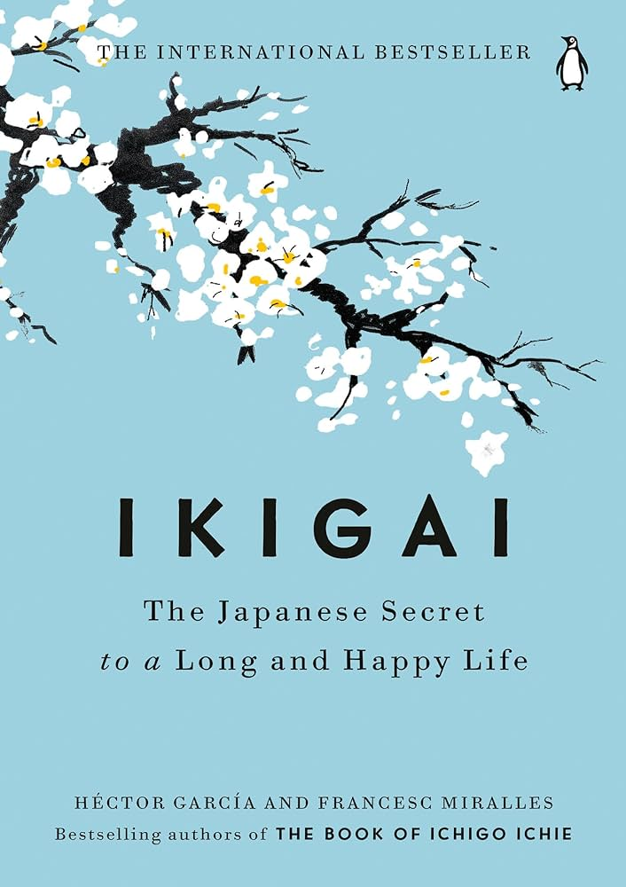

4 
IKIGAI: THE JAPANESE SECRET TO A LONG AND HAPPY LIFE
Ikigai is a Japanese concept that roughly translates to "a reason for being" or "a reason to wake up
in the morning." It encompasses finding joy, purpose, and fulfillment in life. The concept suggests
that by identifying and nurturing the intersection of four elements, individuals can lead a
fulfilling and meaningful life. These elements are:
- What you love (your passion).
- This refers to activities, hobbies, or pursuits that bring you joy and fulfillment.
- It could be anything from painting to gardening to playing music.
- What you are good at (your vocation).
- This involves recognizing your strengths, skills, and talents.
- It's about understanding what you excel at and what comes naturally to you.
- What the world needs (your mission).
- This aspect emphasizes contributing to the greater good, making a positive impact, or serving
others in some capacity.
- It involves identifying needs or problems in the world that resonate with you and finding ways
to
address them.
- What you can be paid for (your profession).
- This relates to finding a career or vocation that allows you to earn a living while also
aligning
with your passions,
strengths, and values.
The idea behind ikigai is that true fulfillment and happiness
come from finding balance and harmony among these four elements. It's about finding a
purpose-driven life that integrates personal fulfillment with societal contribution and
financial stability. By living in alignment with their ikigai individuals can experience a sense
of meaning, satisfaction, and longevity.